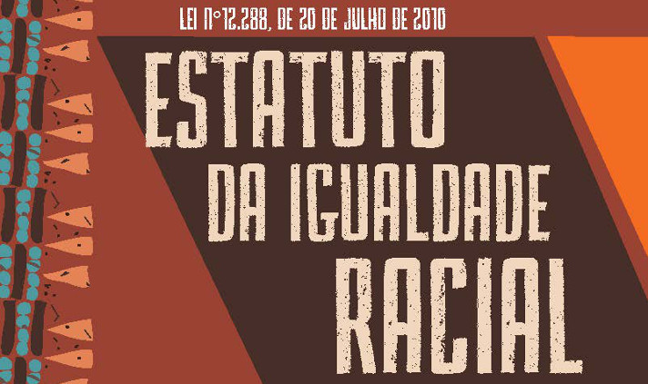
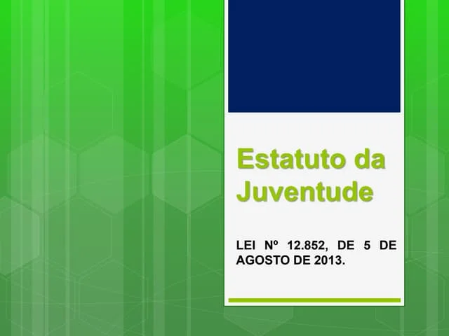

Arquivo histórico digital · Santa Catarina
Memória, reconhecimento e políticas de igualdade
Este índice reúne os acontecimentos selecionados para este marco histórico. Cada página individual está preparada para receber textos, imagens, documentos e referências conforme os materiais pesquisados forem reunidos.
Acontecimentos em ordem cronológica
-
 01
01Lei nº 10.639
Descrição histórica a inserir com base em fontes pesquisadas.Explorar acontecimento -
 02
02Lei nº 11.645
Descrição histórica a inserir com base em fontes pesquisadas.Explorar acontecimento -

03Estatuto da Igualdade Racial
Descrição histórica a inserir com base em fontes pesquisadas.Explorar acontecimento -
 04
04Dia Nacional de Zumbi e da Consciência Negra
Descrição histórica a inserir com base em fontes pesquisadas.Explorar acontecimento -

05Instituto do Estatuto da Juventude
Descrição histórica a inserir com base em fontes pesquisadas.Explorar acontecimento -
 06
06Lei nº 14.759
Descrição histórica a inserir com base em fontes pesquisadas.Explorar acontecimento